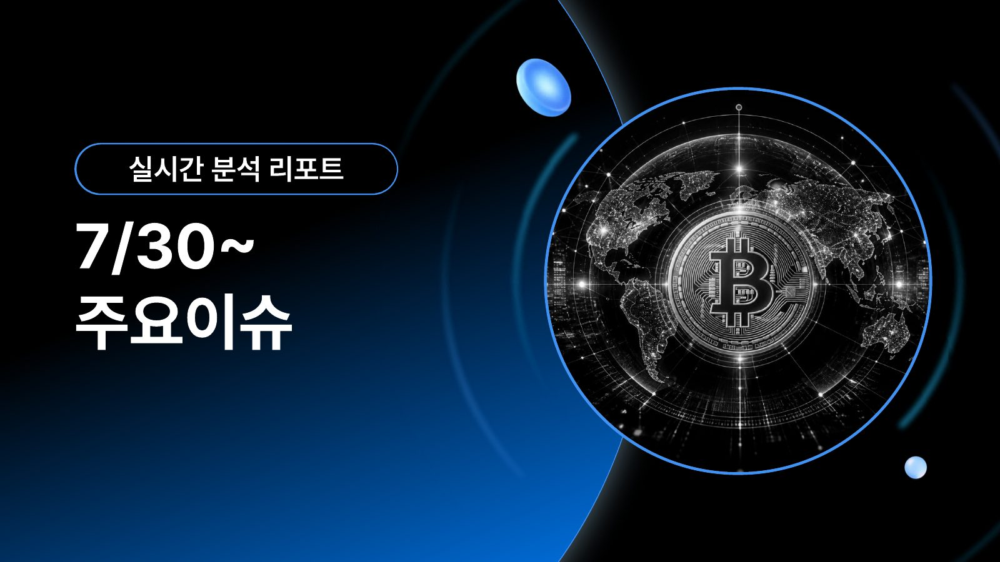

PDF · 14페이지 2026.07.30-31 · 주요 이슈 브리핑 7월 30일-31일 주요 이슈 미국의 대규모 공습 작전, 이란의 공식 보복 경고, 지정학적 긴장의 시장 파급 경로, 핵심 경제지표, CLARITY Act 협상, 일본은행 금리 결정과 비트코인 시나리오를 한 번에 정리한 시각 자료입니다. 중동 정세FOMC·경제지표CLARITY Act일본은행비트코인 영향 PDF 바로 열기 PDF 다운로드 휴대전화에서 바로 열기가 지원되지 않으면 ‘PDF 다운로드’를 눌러 파일 앱이나 PDF 뷰어에서 확인하세요.